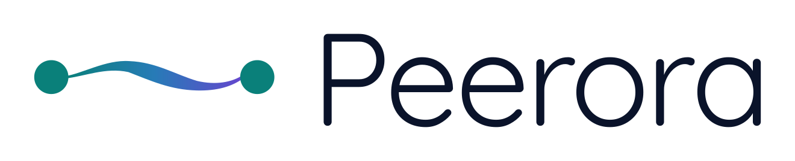

Direct links between nearby devices
for Kotlin Multiplatform
Android
iOS
macOS
JVM
Bluetooth LE·Local network·Wi-Fi·Encrypted links·Automatic reconnect


Direct links between nearby devices
for Kotlin Multiplatform
Bluetooth LE·Local network·Wi-Fi·Encrypted links·Automatic reconnect